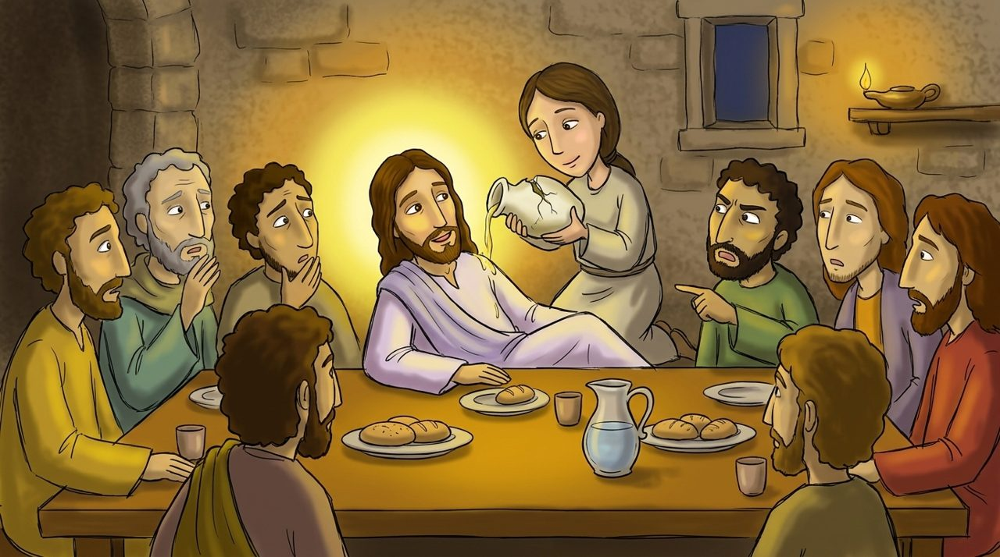

Scene 1 · Matthew 26:6–13
The Woman Who Poured Precious Perfume
In Bethany, a woman brought very expensive and poured it on Jesus' head. The whole room was filled with a beautiful fragrance.
The disciples said, "Why is she wasting it?" but Jesus said, "This woman did a good thing for Me. She prepared Me for burial. What this woman did will be told all over the world."